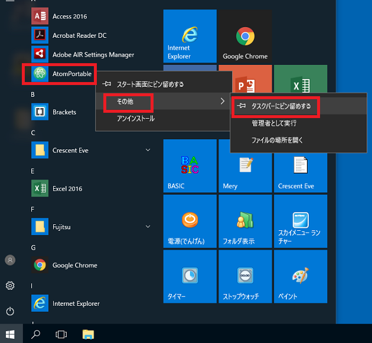
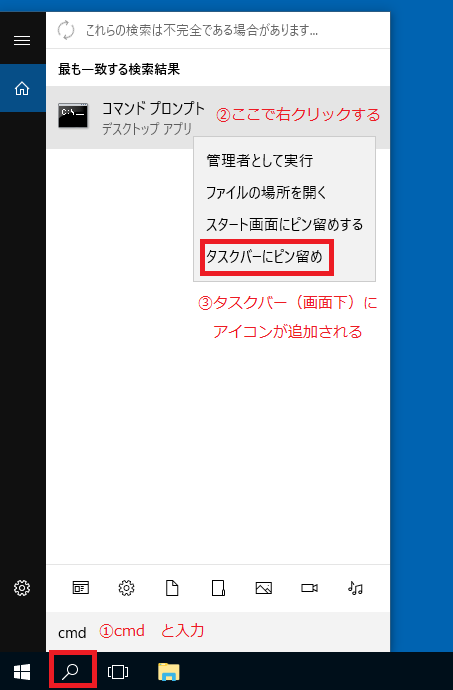
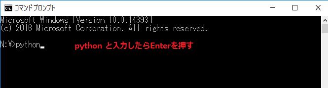
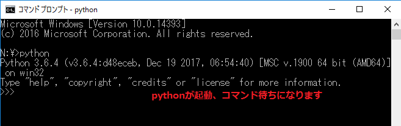
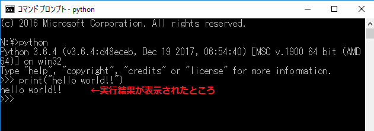
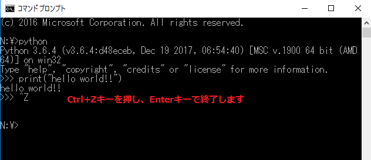

プログラム文を書くには編集するためのソフト（エディタ）が必要です。エディタにはいろいろありますが、今回はGitHubが公開しているAtomを使います。
また、書いたプログラムを実行するにはコマンドプロンプトを使用します。
それぞれ使いやすいようタスクバーにピン留めしましょう ※スタートボタンが動かない場合は別途ファイルを配布しますので設定は不要です。
Pythonのプログラムを実行するにはコマンドプロンプト（macOSではターミナル）というアプリケーションを使います。
こちらもタスクバーにピン留めしておきましょう。
下図のように、スタートメニューからAtomPortableアイコンを右クリックし、タスクバーにピン留めします。

デスクトップ左下検索バーに「cmd」と入力します。
「コマンドプロンプト」が表示されるのでクリックします。

Pythonの実行方法にはいくつかあります。
lコマンドプロンプトでPythonを実行するには「対話モード」と「ファイルを読み込んで実行するモード」の2つがあります。
対話モードで実行する方法を紹介しておきます。
コマンドプロンプトを起動し、N:￥>python と入力し、enterを押します。
▼python と入力。

▼パイソンが起動し、インストールされているバージョン等が表示されます。 >>> の後にプログラム文を入力。

▼>>>print("hello world!") と入力してみましょう。すべて半角文字です。print()は文字列や演算結果を出力する関数です。Enterキーを押すと、下図のように出力されます。

▼対話モードを終了するときは、quit() と入力するか、CtrlキーとZキーを同時に押したあと、Enterキーを押します。

あとは、exit と入力するか、ウィンドウ右上の「×」ボタンを押せばコマンドプロンプトを終了できます。
対話モードはPythonの動作確認に便利な機能です。本格的にプログラムを作るときはファイルに書いたプログラム文を読み込んで実行します。
課題ではファイルにプログラム文を書いて動作させていきます。